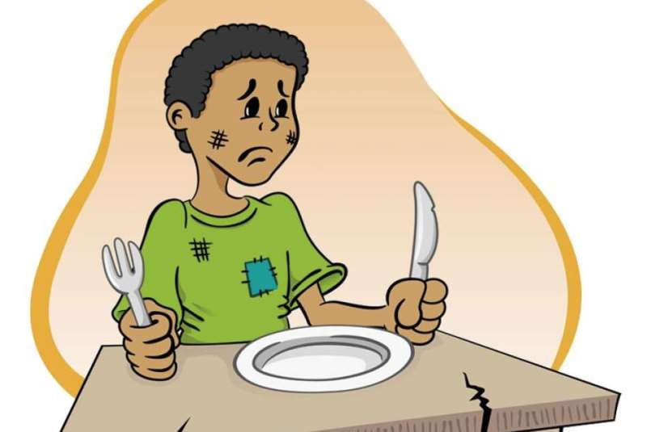

Portifólio

Atividade Extensionista Uninter
Atividade interdisciplinar com viés de inclusão digital, com foco e pelo menos um dos 17 Objetivos de Desenvolvimento Sustentável (ODS) da Organização das Nações Unidas (ONU).
Este projeto visa realizar um estudo dos dados públicos sobre as condições de vida na cidade de Salvador/BA, utilizando as técnicas de inteligência artificial, para ajudar no combate a fome.